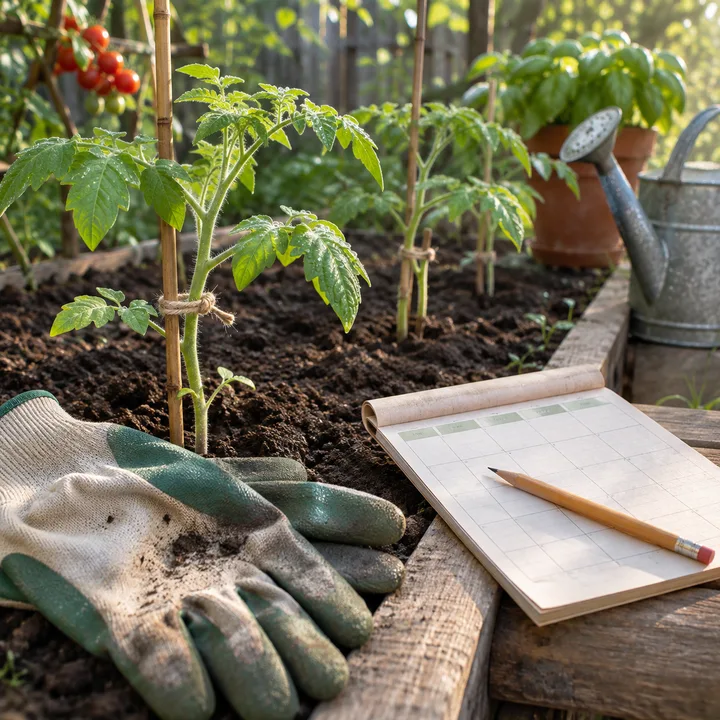

Cómo llevar un diario del huerto en el móvil
Guarda fechas, tareas y observaciones para la próxima temporada.

Separa las fechas de las tareas
Apunta en la agenda de casa las fechas importantes, por ejemplo «sábado: trasplantar la albahaca». Para las labores sin fecha fija, abre Compra → Cosas que hacer. Anota «comprar sustrato» o «atar las tomateras» y marca cada tarea al terminarla.
Deja una nota para la siguiente temporada
En el bloc de notas, escribe qué probaste y qué observaste. Basta una frase: «La albahaca del balcón orientado al este creció mejor que la del sol de la tarde». Al final de la temporada, repasa tus notas y decide qué repetir o cambiar. Puedes empezar con una nota de texto y la despensa de EatMeFirst vacía.